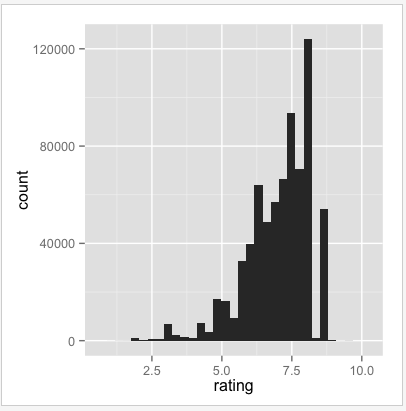
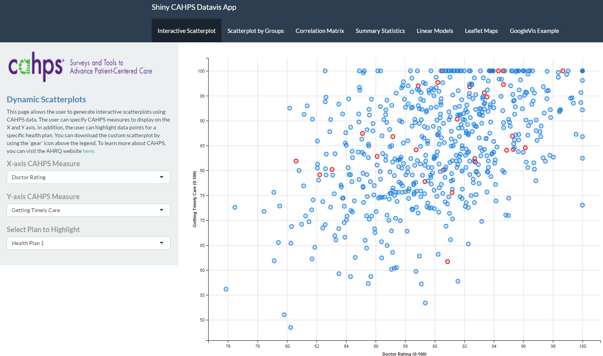
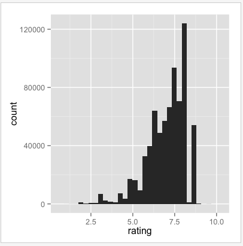
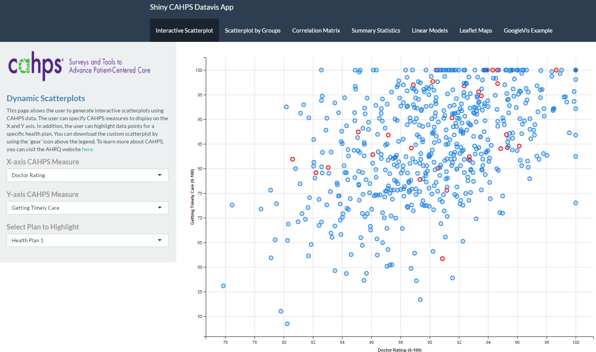
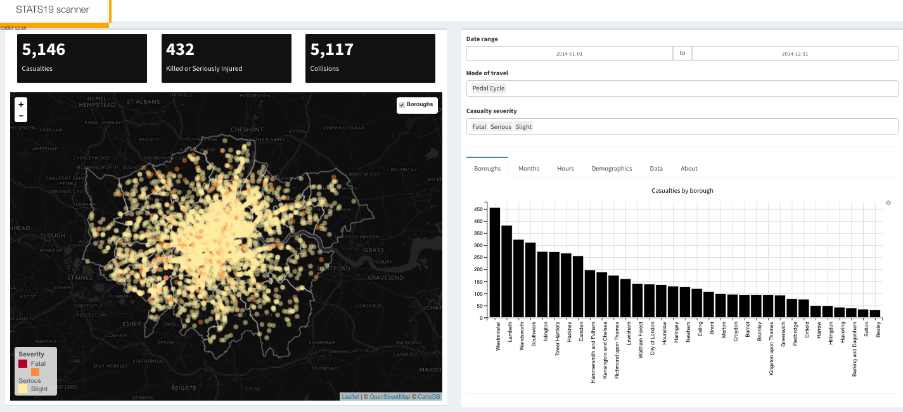

- In the words of its developers - "A web application framework designed for R"
- At a minimum, it allows R programmers to transform static graphs into interactive web-based visualizations
 vs. 
Mike Cui and Ricardo Sanchez
 vs. 
In advanced settings, Shiny can be used to build complex applications which allow users to model, visualize, and input/download data
Shiny integrates well with R's extensive visualization libraries (i.e. ggvis, leaflet, RgoogleVis) to create customizable visualizations
